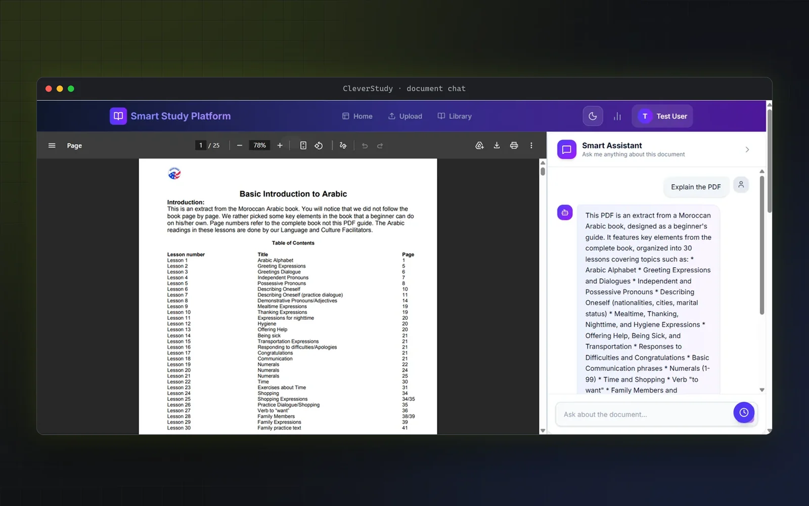
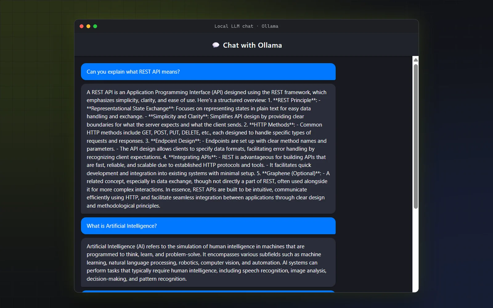

Filament · Livewire
Gemini function calling
01 AI integration · Laravel
UMC School Management System
A school administration system whose assistant answers questions by calling typed database tools instead of reading the whole database.
Murid AbuHamed · Software Engineer
Software Engineer building intelligent applications and AI-powered products. I develop end-to-end software and integrate AI capabilities and language models into practical applications. I explore emerging AI technologies and apply them to create useful, intelligent product experiences.
01 · Featured work
Each has its own case study: the problem, the architecture, the decisions, and what is still unfinished. All of it is drawn from the source code.
01 AI integration · Laravel
A school administration system whose assistant answers questions by calling typed database tools instead of reading the whole database.

02 AI integration · FastAPI · React
Upload a PDF and get a quiz, flashcards and a chat assistant grounded in the document, with defensive handling of model output.

03 AI integration · Spring Boot
A Spring Boot app that talks to a model running locally through Ollama, with an honest account of what a first version gets wrong.
02 · What I can build
Responsive interfaces in React and TypeScript, or plain HTML, CSS and JavaScript, connected to a backend API: layout, forms, state, and loading and error handling.
See CleverStudy and the interface projects.
REST APIs and server-side applications in Python (FastAPI), Java (Spring Boot), C# (ASP.NET Core) or PHP (Laravel), with authentication, relational data, and routes, business logic and data access kept in separate layers.
See CleverStudy, UMC and the fan–artist API.
Adding language-model features to an application: hosted models such as Gemini or local models through Ollama, with structured output, tool calling over your own data, and handling for malformed responses and rate limits.
See UMC, CleverStudy and the local LLM chat app.
03 · Engineering journal